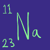

Sodium Na

Sodium is a soft, silvery metal that tarnishes quickly in air and reacts vigorously with water.
 Sodium is above both Hydrogen and Carbon in the reactivity series
Sodium is above both Hydrogen and Carbon in the reactivity series
Reactions
Reaction with water
Sodium + Water --> Sodium Hydroxide + Hydrogen
2Na(s) + 2H2O(l) --> 2NaOH(aq) + H2(g)
Reaction with Chlorine
Sodium + Chlorine --> Sodium Chloride
2Na(s) + Cl2(g) --> 2NaCl(s)
General Reaction with Halogens
Sodium + Halogen --> Sodium Halide
Questions
- Why is Sodium stored in mineral oil?
- What precautions should you take if you work with Sodium metal in the laboratory?
- Describe and explain what you see when sodium is placed in water
- 46g of Sodium is completely reacted with Chlorine gas. What mass of sodium chloride is produced?
- When Sodium ions are in contact with a flame, what colour will the flame become?
- What volume of Hydrogen gas will be produced if 1 Mole of Sodium reacts completely with water?